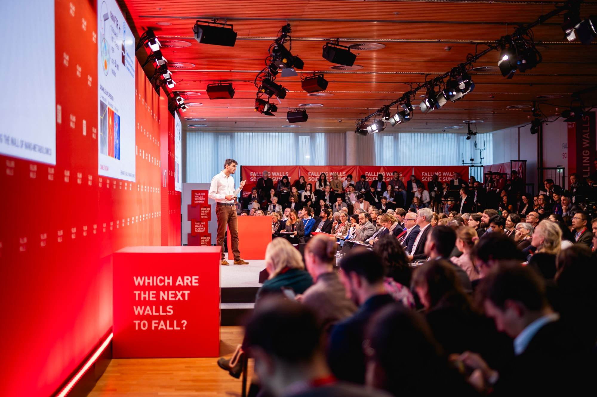
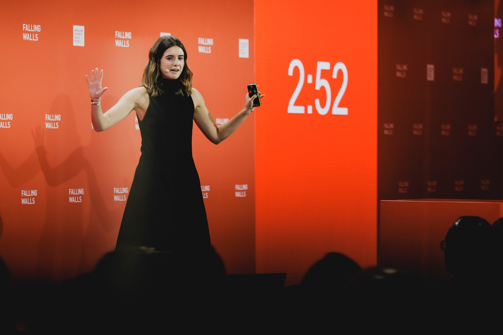
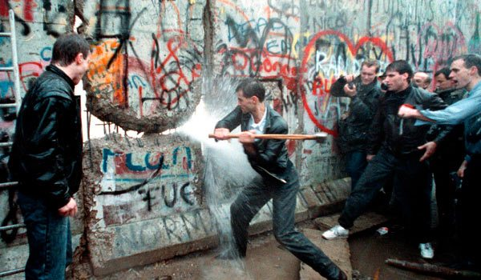
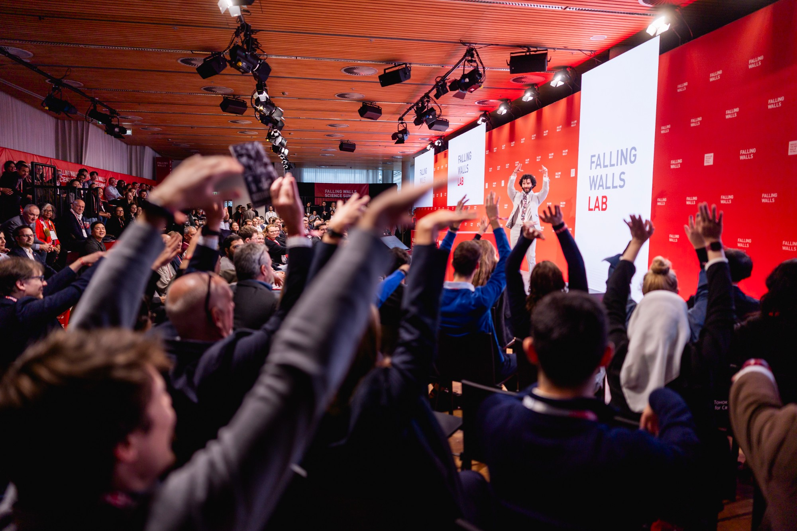
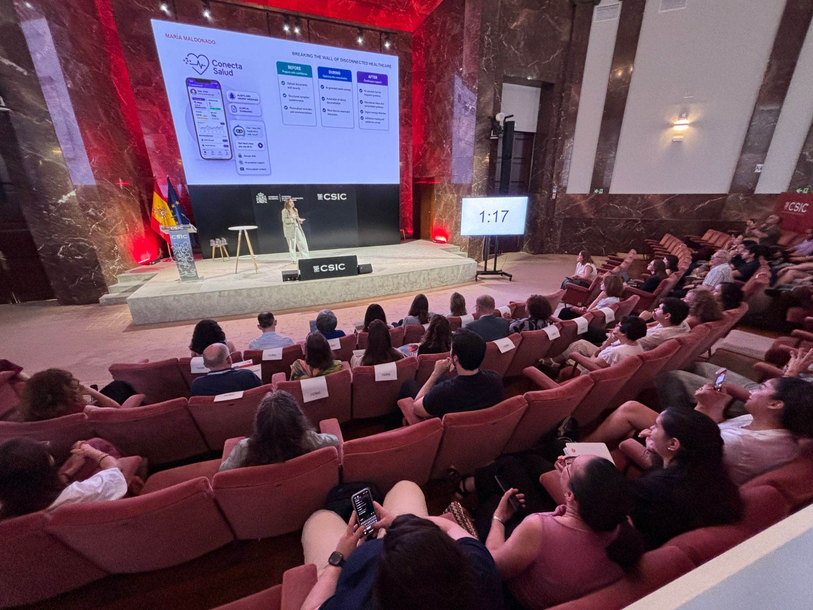
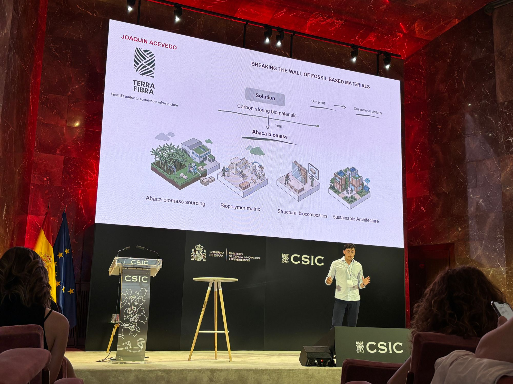
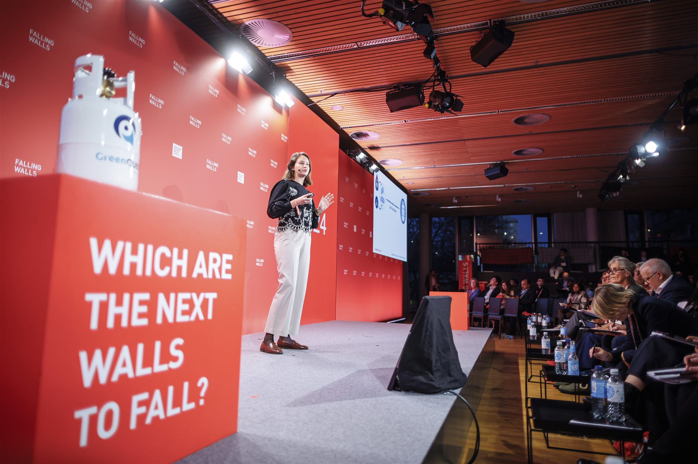
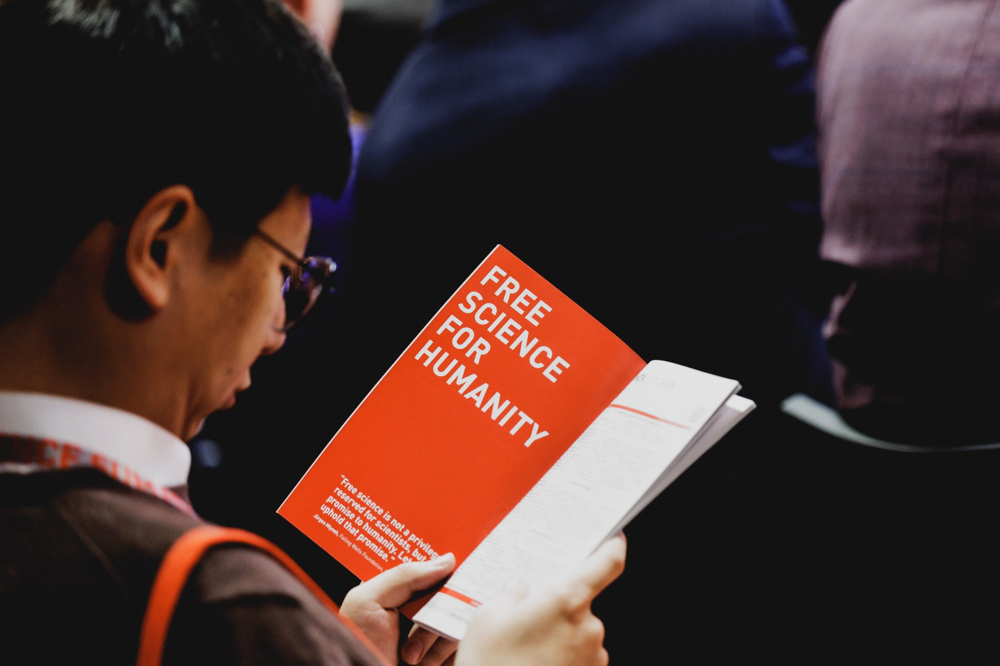

¿Qué muro romperá tu investigación?
Gracias a todas las personas que hicisteis posible Falling Walls Lab Madrid 2026. Nos vemos en 2027.
¿Qué muros caerán a partir de ahora?
De Berlín 1989 al escenario de Falling Walls: cada idea derriba uno.
Avísame de la edición 2027
Inscripciones cerradas · La convocatoria abre en febrero
Temporada 2026
Todas las ediciones
De 1989 a hoy
Nuestra historia
Antes se derribaban con martillos. Hoy, con ideas.


Berlín · 1989 Falling Walls · hoyDesliza o pasa el cursor sobre la imagen · Foto de 1989: Berlín, noviembre de 1989 · autoría pendiente de confirmar
En imágenes









Fotos de Berlín © Falling Walls Foundation · Haz clic en una foto para ampliarla
Una red global
Explorar el mapa
Todos los caminos llevan a Berlín
Partners